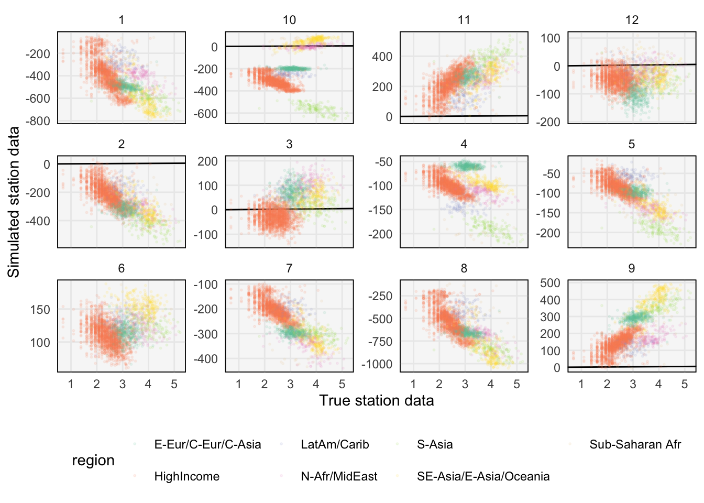
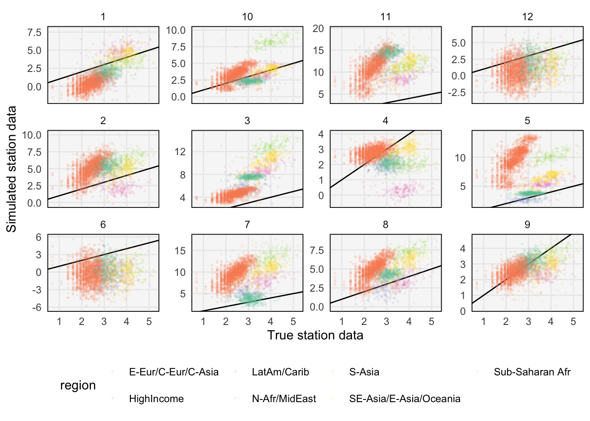
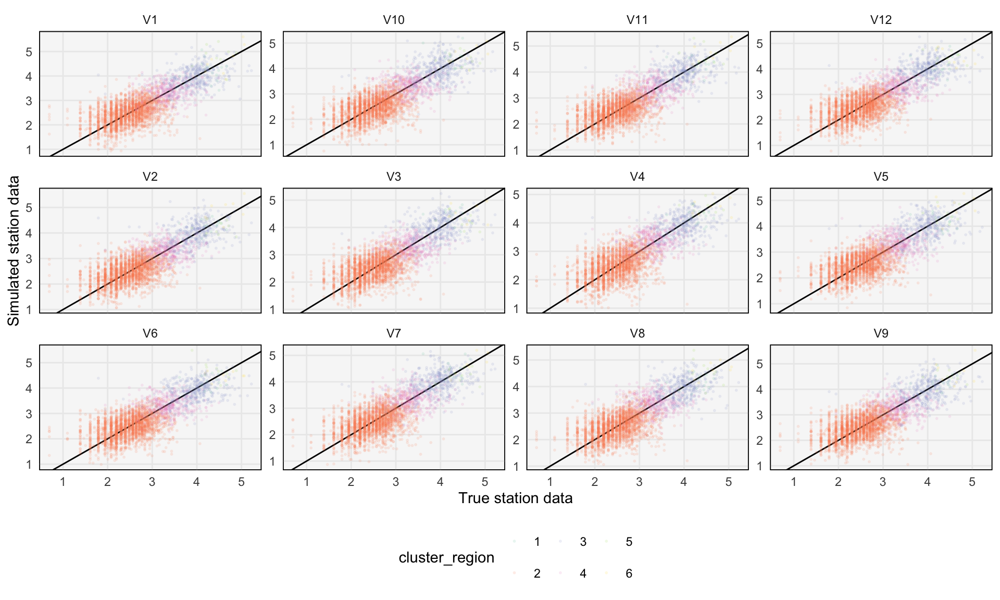
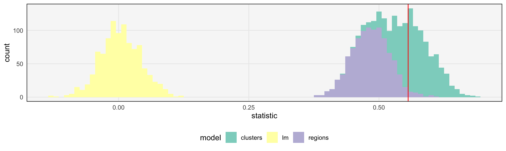

library(tidyverse)
library(rstan)
theme479 <- theme_minimal() +
theme(
panel.grid.minor = element_blank(),
panel.background = element_rect(fill = "#f7f7f7"),
panel.border = element_rect(fill = NA, color = "#0c0c0c", size = 0.6),
legend.position = "bottom"
)
theme_set(theme479)Prior and Posterior Predictives
Simulating data to evaluate model quality.
- From the previous notes, we see that an exploratory analysis can motivate few plausible models for a dataset. How should we go about choosing between them?
f <- tempfile()
download.file("https://uwmadison.box.com/shared/static/2pzgdu7gyobhl5tezo63tns7by1aiy6d.rda", f)
GM <- get(load(f))- In some of your other classes, you might have seen people use cross-validation / test set error. While this is useful (and relatively automatic), it can be a black box. An alternative which often brings mores insight into the structure of the problem is to use prior and posterior predictive distributions for (visual) model comparison.
Prior predictive distributions
The prior predictive distribution can be used to decide whether certain model families are reasonable candidates for a problem, before formally incorporating the evidence coming from the data.
The idea is that if we can write down a generative model, then we can simulate different datasets with it, even before estimating the model parameters. This is often the case in Bayesian models, where we can (a) sample parameters from the prior, and (b) simulate data from the model with those parameters.
If the simulated datasets are plausible, then the overall model class is a reasonable one. If they are not, then the model class should be modified. Either the prior or the likelihood might need revision.
For example, in the example below, we simulate datasets using both a vague and an informative prior. Vague priors are often recommended because they are « more objective » in some sense. However, in this case, we see that the simulated datasets are not even remotely plausible.
# function to simulate from vague prior
prior1 <- function(Nsim) {
tau0 <- 1 / sqrt(rgamma(1, 1, rate = 100))
tau1 <- 1 / sqrt(rgamma(1, 1, rate = 100))
sigma <- 1 / sqrt(rgamma(1, 1, rate = 100))
beta0i <- rnorm(7, 0, tau0)
beta1i <- rnorm(7, 0, tau1)
beta0 <- rnorm(1, 0, 100)
beta1 <- rnorm(1, 0, 100)
epsilon <- rnorm(Nsim, 0, sigma)
data.frame(
log_pm25 = GM$log_pm25,
region = GM$super_region_name,
sim = beta0 + beta0i[GM$super_region] + (beta1 + beta1i[GM$super_region]) * GM$log_sat + epsilon
)
}prior1_data <- map_dfr(1:12, ~ prior1(Nsim = nrow(GM@data)), .id = "replicate")
ggplot(prior1_data, aes(x = log_pm25, y = sim)) +
geom_abline(slope = 1) +
geom_point(aes(col = region), alpha = 0.1, size = 0.4) +
scale_color_brewer(palette = "Set2") +
labs(x = "True station data", y = "Simulated station data") +
facet_wrap(~ replicate, scale = "free_y")
- The block below instead simulates from a subjective, informative prior. The resulting samples are much more plausible, lying in a comparable range to the true data. However, note, the samples from the prior predictive do not need to look exactly like the observed data — if they did, there would be no need to fit model parameters! Instead, they should look like plausible datasets that might have been observed.
# function to simulate from informative prior
prior2 <- function(Nsim) {
tau0 <- abs(rnorm(1, 0, 1))
tau1 <- abs(rnorm(1, 0, 1))
sigma <- abs(rnorm(1, 0, 1))
beta0i <- rnorm(7, 0, tau0)
beta1i <- rnorm(7, 0, tau1)
beta0 <- rnorm(1, 0, 1)
beta1 <- rnorm(1, 1, 1)
epsilon <- rnorm(Nsim, 0, sigma)
data.frame(
log_pm25 = GM$log_pm25,
region = GM$super_region_name,
sim = beta0 + beta0i[GM$super_region] + (beta1 + beta1i[GM$super_region]) * GM$log_sat + epsilon
)
}
prior2_data <- map_dfr(1:12, ~ prior2(Nsim = nrow(GM@data)), .id = "replicate")
ggplot(prior2_data, aes(x = log_pm25, y = sim)) +
geom_abline(slope = 1) +
geom_point(aes(col = region), alpha = 0.1, size = 0.4) +
scale_color_brewer(palette = "Set2") +
labs(x = "True station data", y = "Simulated station data") +
facet_wrap(~ replicate, scale = "free_y")
- Philosophically, this prior predictive analysis is based on the idea that, though probability is subjective, evidence can be used to update our beliefs. The idea of the prior predictive is to visually encode subjective beliefs about the problem under study before gathering new evidence.
Posterior predictive distributions
Once the prior predictive is calibrated, we can fit the model. To evaluate it’s quality, we can use the posterior predictive.
The posterior predictive is just like the prior predictive, except that it samples model parameters from the data-informed posterior, rather than the data-ignorant prior.
Formally, it is the distribution of new datasets when drawing parameters from the posterior. The simulation mechanism is (a) draw model parameters from the posterior and (b) simulate a dataset using parameters from (a).
The code below fits the three models. We are using the
rstanpackage to fit three Bayesian models. The first modellmis a Bayesian linear regression, assuming the same slope across all regions. The two other models assume different slopes for different regions1, but use the WHO and cluster-based region definitions, respectively. You do not need to worry about how therstancode, which is sourced into thestan_modelfunction, is written. It is enough to be able to fit these two types of models as if they are built-in function in R.
# Define the input datasets for the lm, region-based, and cluster-based models
datasets <- list(
"lm" = with(GM@data, list(N = length(log_pm25), y = log_pm25, x = log_sat)),
"regions" = with(
GM@data,
list(N = length(log_pm25), y = log_pm25, x = log_sat, group = super_region, R = n_distinct(super_region))
),
"clusters" = with(
GM@data,
list(N = length(log_pm25), y = log_pm25, x = log_sat, group = as.integer(cluster_region), R = n_distinct(cluster_region))
)
)
# Define the two types of Bayesian models
model_def <- list(
"lm" = stan_model("https://uwmadison.box.com/shared/static/hoq1whain301bj6gj670itxabnnhvcy7.stan"),
"hier" = stan_model("https://uwmadison.box.com/shared/static/lvouz9jj4rbkmrx5osj2dtrhj2ycdll8.stan")
)# Fit the models above to the three datasets of interest
controls <- list(max_treedepth = 15, adapt_delta = 0.99)
models <- list(
"lm" = sampling(model_def$lm, data = datasets$lm, chains = 1, control = controls),
"regions" = sampling(model_def$hier, data = datasets$regions, chains = 1, control = controls),
"clusters" = sampling(model_def$hier, data = datasets$clusters, chains = 1, control = controls)
)- The code above takes a little while to run (about 10 minutes for the last two models). To save some time, you can download the fitted models from the link below. The
modelsobject is a list whose elements are fitted STAN models for the three model definitions above. The fitted model objects include posterior samples for the region slopes as well as simulated ground station PM2.5 data, based on those posterior slopes.
f <- tempfile()
download.file("https://uwmadison.box.com/shared/static/x7dotair443mhx34yzie3m3lrsvhk19a.rda", f)
models <- get(load(f))- The block below simulates station PM2.5 data from the fitted posterior of the cluster-based model. Note that, compared to the prior predictive, the posterior predictive is much more closely related to the true underlying dataset.
# extract 12 samples and reshape it to "long" format
posterior_samples <- as.matrix(models$clusters, pars = "y_sim")[950:961, ] %>%
t() %>%
as_tibble() %>%
bind_cols(GM@data) %>%
pivot_longer(V1:V12, names_to = "replicate", values_to = "log_pm25_sim")
ggplot(posterior_samples, aes(log_pm25, log_pm25_sim)) +
geom_abline(slope = 1) +
geom_point(aes(col = cluster_region), size = 0.4, alpha = 0.1) +
scale_color_brewer(palette = "Set2") +
labs(x = "True station data", y = "Simulated station data") +
facet_wrap(~ replicate, scale = "free_y")
- We can verify that features of the real dataset are accurately captured by features of the posterior predictive. One subtlety is that there is a danger of overfitting features in the posterior predictive. It is best to choose features of the data that are not directly modeled (e.g., if you use slope in the model estimation, then don’t evaluate the posterior predictive using the slope, since by definition this will be well-captured). In the block below, we compute the skewness for each simulated station dataset from the three different models. These skewnesses are plotted as histograms, with the true dataset’s skewness indicated by a vertical line. It seems that the model that uses clustering to define regions is able to simulate datasets with skewness similar to that in the real dataset.
apply_stat <- function(x, f) {
z <- as.matrix(x, pars = "y_sim")
tibble(
"replicate" = seq_len(nrow(z)),
"statistic" = apply(z, 1, f)
)
}
skew <- function(x) {
xdev <- x - mean(x)
n <- length(x)
r <- sum(xdev^3) / sum(xdev^2)^1.5
r * sqrt(n) * (1 - 1/n)^1.5
}
posteriors <- map_dfr(models, ~ apply_stat(., skew), .id = "model")
truth <- skew(GM@data$log_pm25)
ggplot(posteriors, aes(statistic)) +
geom_histogram(aes(fill = model), binwidth = 0.01) +
geom_vline(xintercept = truth, col = "red") +
scale_fill_brewer(palette = "Set3")
Footnotes
Bayesian regression models that allow different slopes for different groups are called hierarchical models.↩︎